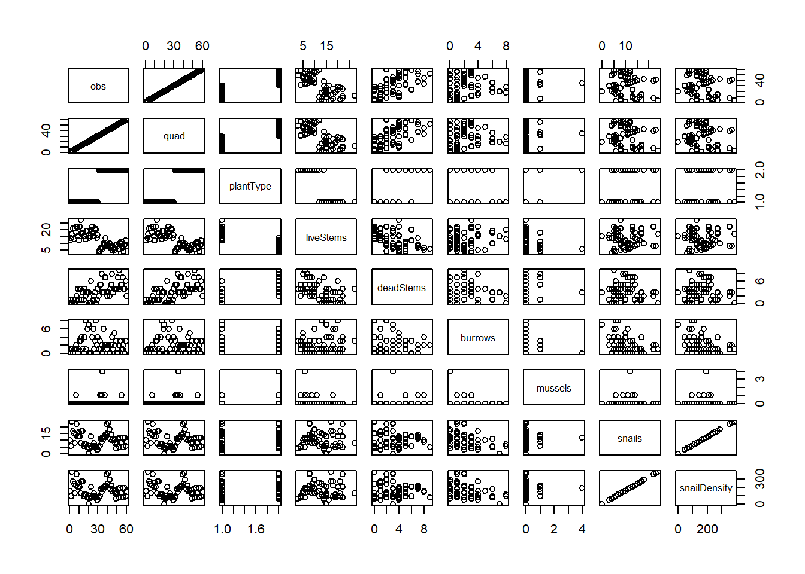
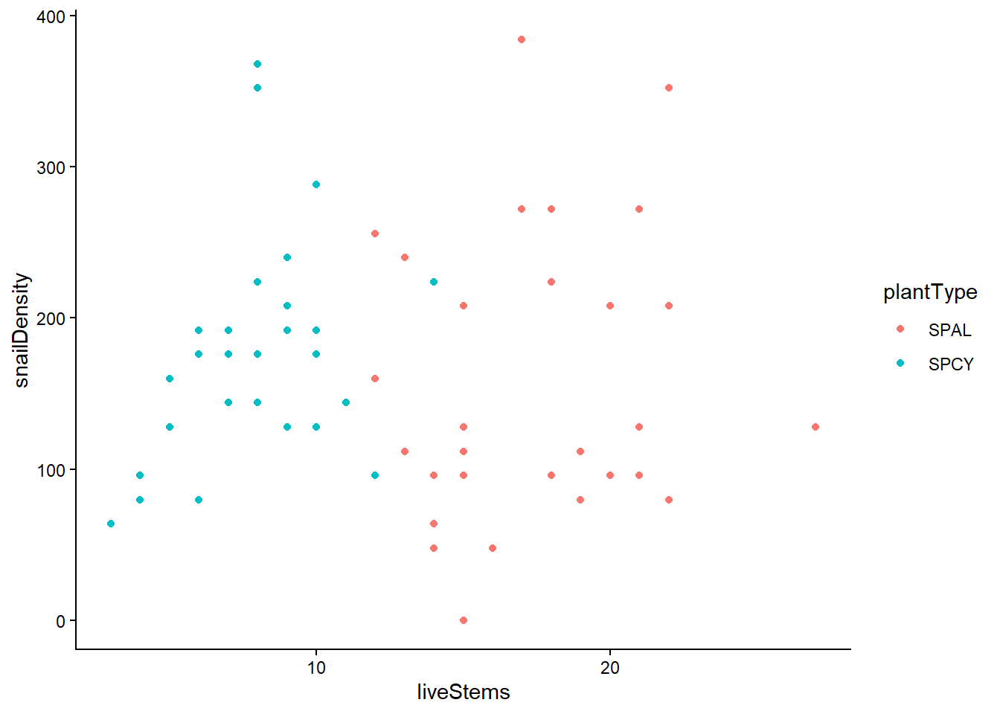
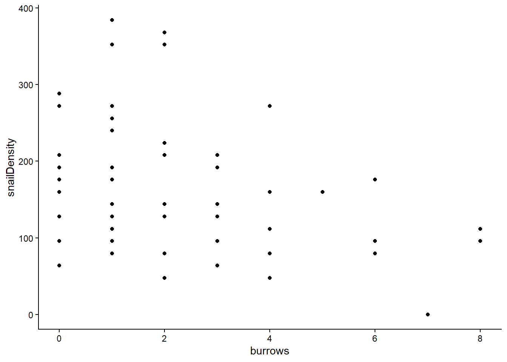
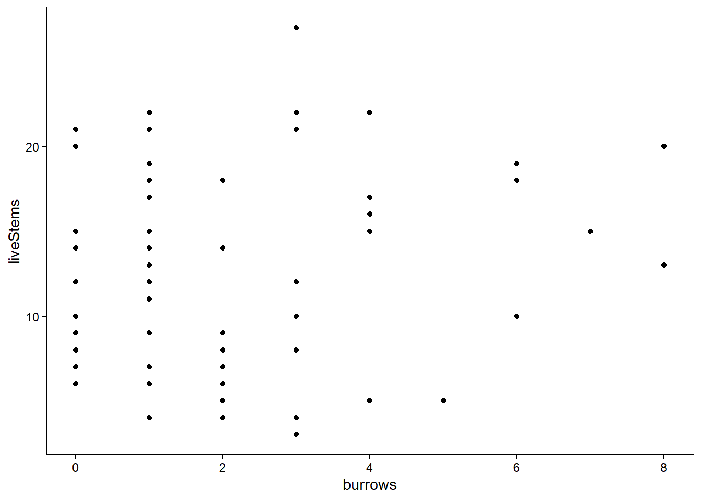
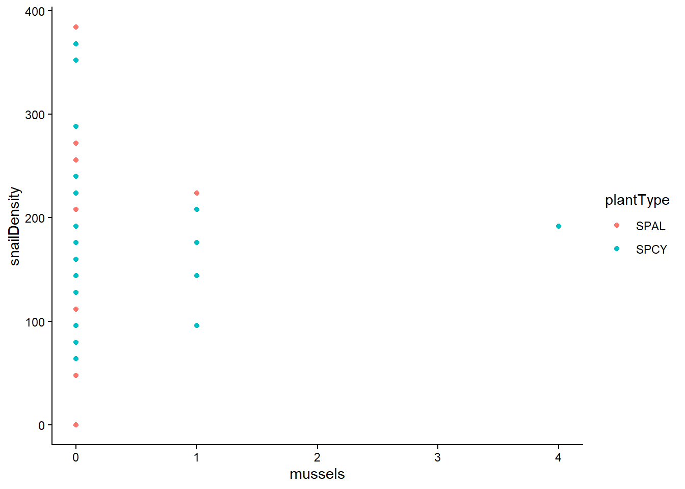
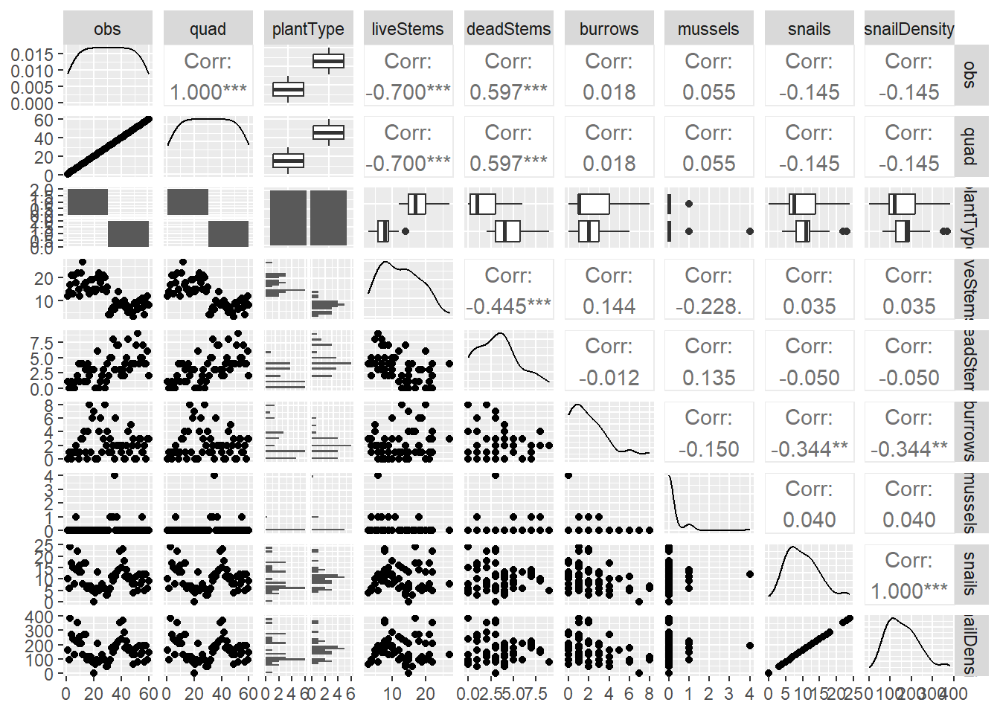
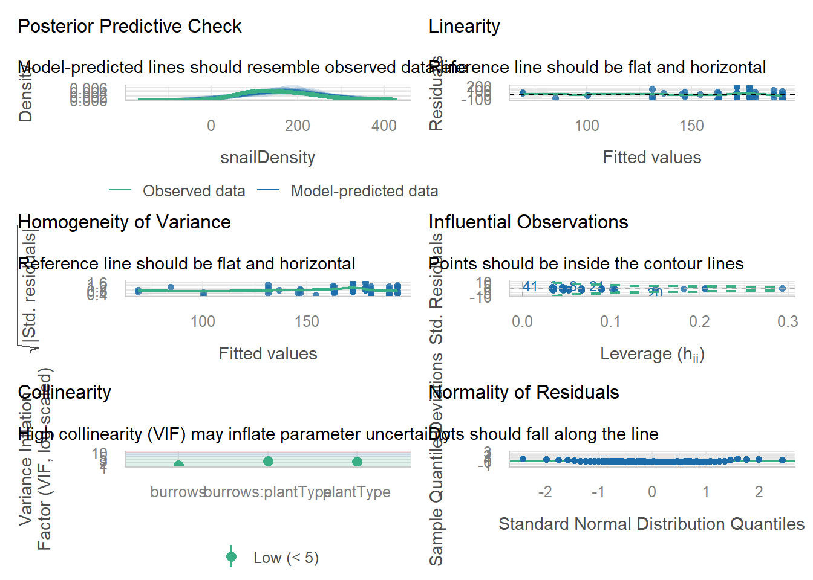
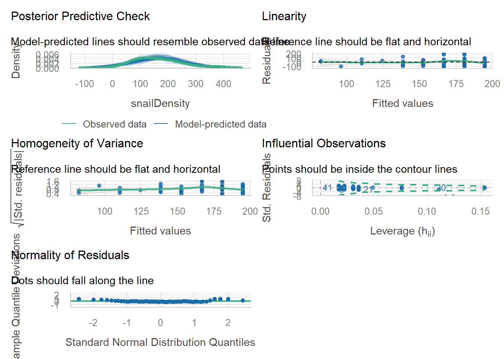
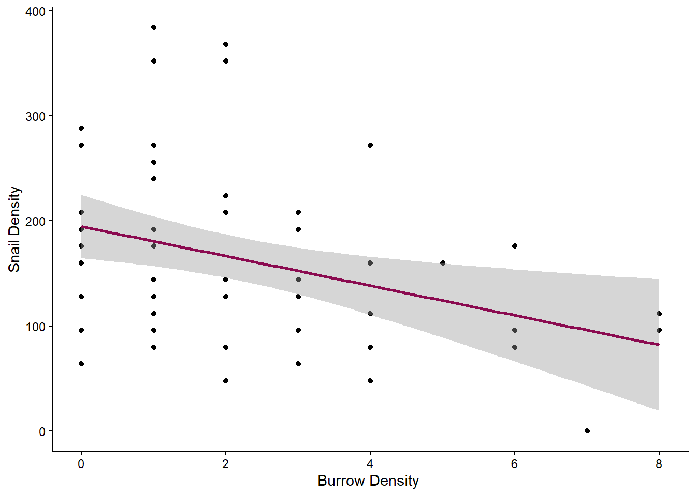

The goal of this assignment is to apply the tools and approaches we’ve learned during lab to explore data from a study of periwinkle snail (Littoraria irrorata) association with big cordgrass (Spartina cynosuroides) and smooth cordgrass (Spartina alterniflora) in a salt marsh in Taskinas Creek, a tributary of the York River. The dataset includes the following variables:
obs: Observation number quad: Quadrat number plantType: SPAL = Spartina alterniflora; SPCY = Spartina cynosuroides liveStems: Number of live stems deadStems: Number of dead stems burrows: Fiddler crab burrows greater than one centimeter mussels: Ribbed mussels (Guekensia demissa) snails: Periwinkle snails (Littoraria irrorata) snailDensity: Snail Density notes: any notes about the observation
Please submit this assignment via GitHub by 24 September.
Getting started
Use the code chunk below to load packages and the data. [0.5 pt]
data$plantType <-as.factor(data$plantType)pairs(data) #quick data exploration before selecting ggplots

Data exploration
Explore the data visually using ggplot2. [0.5 pt]
ggplot(data, aes(x = liveStems, y = snailDensity, color = plantType))+geom_point()+theme_classic()

ggplot(data, aes(x = burrows, y = snailDensity))+geom_point()+theme_classic()

ggplot(data, aes(x = burrows, y = liveStems))+geom_point()+theme_classic()

ggplot(data, aes(x = mussels, y = snailDensity, color = plantType))+geom_point()+theme_classic()# doesn't really feel you much I don't think

Describe your approach. What choices did you make in deciding which variables to use, plot types, etc., and why? [1 pt]
I selected certain variables based on previous knowledge on S. alterniflora, fiddlers, and L. irrorata. I know that L. irrorata often feed on S. alterniflora and other salt marsh grasses by scraping the plant with their radula to gain algae. Thus I looked at the density of L. irrorata with live stem density for each plant species as this is a potential food source for them. They will also feed through the mud to gain benthic microalagae, which is the same food source as fiddler crabs. So I plotted fiddler crab burrows against the snail density as their may exist some level of competition between the two. Lastly, this does not have to necessarily do with the periwinkle snails, however I know there is typically a neutral or positive association with smooth coordgrass density to burrow density. So I plotted burrow density to live stems found.
Research question
Based on the data description above and your visualizations, formulate research questions and testable hypotheses that could be answered by applying linear models to the data provided. [1 pt]
Q1: How does the presence of burrows impact snail density?
Q2: How does stem count and plant type affect snail density?
H0: I hypothesize that there will be no change in Littorina irrorata density regardless of stem count of either marsh grass species or burrow density.
H1: I hypothesize that in regions where there is a low burrow density there will be a higher density of Littorina irrorata.
H2: I predict that high stem count and species of marsh grass will effect snail density.
Analysis
Develop a set of models (3+) that reflect the hypotheses described above. [1 pt]
m1 <-lm(snailDensity ~ burrows, data = data)m2 <-lm(snailDensity ~ burrows*liveStems, data = data)m3 <-lm(snailDensity ~ burrows*liveStems*plantType, data = data) #probably will have some multicolinearitym4 <-lm(snailDensity ~ burrows*plantType, data = data)
Evaluate your models using an approach covered as part of this class. [1 pt]
#Check for colineariltyGGally::ggpairs(data) #liveStems and plantType are highlight correlated. Burrows with either are fine

#look at VIF for each model with 2 or more termsvif(m2) #burrows and burrows:livestems >10. Should be concerned
#All AIC values are close within 1 other each other. Based on VIF and AIC m1 and m4 are the best options. I am going to go with m1.
Check your model diagnostics (i.e., are the model assumptions met) using an approach covered as part of this class. [1 pt]
library(performance)?check_model# Use performance::check_model to look at various model assumptionsperformance::check_model(m4)# Linearity and Homogeneity of Variance looks very rough

performance::check_model(m1) #Linearity and homogeneity of variance looks better.

#Normality of residuals tails for both models do deviate from the line#Choosing m1 for the best model based on performance, VIF, and AICsummary(m1) #to get parameter estimates and SEs for the model. Do not need to make SE inflated due to only using one variable in the model.
Call:
lm(formula = snailDensity ~ burrows, data = data)
Residuals:
Min 1Q Median 3Q Max
-130.79 -56.53 -11.39 55.95 203.30
Coefficients:
Estimate Std. Error t value Pr(>|t|)
(Intercept) 194.792 15.011 12.977 < 2e-16 ***
burrows -14.089 5.051 -2.789 0.00713 **
---
Signif. codes: 0 '***' 0.001 '**' 0.01 '*' 0.05 '.' 0.1 ' ' 1
Residual standard error: 79.59 on 58 degrees of freedom
Multiple R-squared: 0.1183, Adjusted R-squared: 0.1031
F-statistic: 7.781 on 1 and 58 DF, p-value: 0.007131
#Fitted model over observed dataggplot(data, aes(y = snailDensity, x = burrows))+geom_point()+geom_smooth(method ="lm", formula = y ~ x, se =TRUE, color ="deeppink4")+labs(x ="Burrow Density ",y ="Snail Density" )+theme_classic()

** Provide parameter estimates and SEs for a model for the most supported model and plot the fitted model over observed data. [2 pts]**
Y = (-14.089)x + 194.792 SE = 5.051 R^2 = 0.1183
Conclusions
Provide summary statements about the quality of your analysis, including any potential limitations or caveats. [1 pt] Even though I am using only one variable as a predictor of the model, looking at information like VIF which caused the removal of looking at burrows and live stems as the VIF was high. Thus, I choose burrows as the variable to continue with. While grass type and burrows did not produce a high VIF, the AIC was higher when compared to the model with just burrows and the linearity and homogeneity graphs when looking at the performance trailed off. Thus, I choose m1 over all other models made. Limitations of this model is that it only has one variable and it does not predict snail density well. However, when looking at other variables like mussels in the exploratory page and evaluations from other models, this lead to me choosing burrows as the one variable. This model is limited as burrow data towards the tails are limited and is not describing the system that predicts snail density well.
AI statement
If you used AI for this assignment, please describe your use, including:
1. What tool or service did you use? google/stack overflow
2. What was the specific purpose or use? When looking at the GGally::ggpairs function I could not figure out using ?ggpairs how to determine which corr related to the x and y so I looked at stack overflow and examples provided by google to explain which diagonal corresponds to the correct corr for each variable.
3. How did this use enhance your understanding of the topic/code? It helped me understand how to digest the ggpairs function better. I feel that it can be hard to digest at first and understand which graph pairs with which x and y at first.
Final Project
Each student will complete an independent project using a dataset from their own research whenever possible. Students who do not have an appropriate dataset will be provided with one. If you do not have a dataset to use for this project, please reach out to Rob & Gina as soon as possible.
The project is intended to mirror the statistical component of a scientific research study and will require students to integrate concepts learned throughout the course. Project components include:
formulation of a research question, objective, and/or testable hypotheses;
description of the study design and data with justification of design adequacy;
exploratory data analysis;
selection and justification of an appropriate modeling approach;
model fitting, comparison, selection, and validation;
interpretation of results in the context of the research question;
preparation of publication-quality figures and tables;
a written report in the style of a short scientific paper (approximately 4-6 pages); and
a 3-minute lightening talk summarizing the study, analytical approach, results, and conclusions.
Projects will be evaluated on the quality of the scientific question, appropriateness of the statistical methodology, rigor of the analysis, interpretation of results, clarity of written and oral communication, and reproducibility of the analytical workflow.
To support you on this analytical journey, this project has been divided into four steps, which will all contribute to your final project grade (worth 50% of your total grade).
Project proposal, including research question and description of dataset
Exploratory data analysis and proposed analytical approach
Preliminary model fits and diagnostics
Final paper and presentation
Project proposal
Formulate 1-2 research questions, objectives, and/or testable hypotheses of interest. Provide sufficient detail for someone not familiar with your work to understand the goal(s) of your project. [2 pts]
Questions: 1. How does the colonization of Minuca pugnax into non-native habitats, the mud fiddler crab impact marsh stability; defined by soil strength as a proxy for erosion potential and vertical accretion of sediment?
Can the mussel, Guekensia demissa, offset the predicted negative effects of bioturbation of M. pugnax on marsh stability?
Hypotheses: 1. I predict that the bioturbative effects of M. pugnax will decrease soil strength and vertical sediment accretion. Bioturbation from the fiddler crabs will reduce belowground biomass, bulk density, and aboveground biomass contributing to a reduction in root/plant-mediated sediment trapping.
There are known positive effect mussels can have on plant biomass and sediment accretion in salt marshes, I hypothesize they will offset the predictive negative effects of M. pugnax for soil strength, sediment accretion and known negative effects on Spartina alterniflora aboveground biomass. Their presence can act as a mediator for sediment trapping, replacing lost sediment trapping from salt marsh grass reduction and increase soil strength through the presence of their byssal threads.
Describe the study design and data, including justification of design adequacy to address the research question, objectives, and/or testable hypotheses described above. Provide sufficient detail to evaluate your data in the context of your questions of interest. [3 pts]
This study was conducted in Plum Island, Massachusetts where the fiddler crab M. pugnax is the only burrowing species > 0.5 cm that live on the marsh platform. They are non-native here. I completed a 3-month caging study with 5 treatments: control, reference plot, crab only, mussel only, crab and mussel plot. The study was completed in a randomized block design with 8 replicates. The number of replicates were determined by using similar studies data to complete a power analysis. The reference plots were the only “cages” that only had the posts and no mesh to determine if the cages themselves had an effect on the outcome of the results. For the crab and mussel only plots, this was to identify the individual impact each species would have on the variables that I am testing. The crab and mussel treatment is to see the cumulative effects of them interacting with another and the variables. This study has a third question for my thesis but data for that will not be processed by the time this dataset is needed for class (percent carbon storage in plant biomass and marsh sediment).
However data that has been collected and processed for this data set includes: soil strength at 10 cm increments to 50 cm in depth taken by a shear vane (kPa), elevation (RTK), vertical deposition which is measured by mineral mass of sediment over area over time, above ground biomass dry weight, stem count and stem height. I have stem count data for the start and the end of the experiment. The only additional data that may be added to this data set (hopefully if I can get it processed in time) is bulk density and belowground biomass. I am unsure if I will get these parameters done in time, but I think that my question can be answered even if I do not finish processing these parameters in time. I also have known burrow and mussel density as well as a ~10% sub sample of mussel height (cm) and crab carapace width (cm) and sex for the organisms that were placed in these cages. Even without having bulk density and belowground biomass data processed, soil strength can answer how the different treatments have impacted erosion potential of the marsh, those parameters are more or less covariates that can help further explain the mechanism that is reducing soil strength.